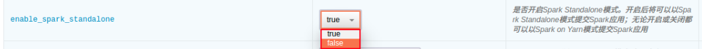
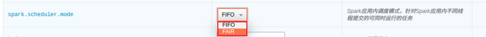

Spark 使用指南
开启/关闭 Spark Standalone 模式
用户可以选择是否开启 Spark Standalone 模式（从 1.1.0 开始默认关闭）。
- 开启后用户可以以 Spark Standalone 模式提交 Spark 应用。
- 关闭后用户可以以 Spark on YARN 模式提交 Spark 应用。
- 如仅以 Spark on YARN 模式提交 Spark 应用或者仅使用 Hadoop 相关功能，则可以选择关闭 Spark Standalone 模式以释放资源。
- 此选项最好不要和其他配置参数项一起改，单独改动此项然后保存设置是推荐的作法。

以 Spark-shell 模式运行 Spark job
enable_spark_standalone 设置为 true 时，以下测试代码可以直接运行；设置为 false 时，需将 master 参数指定为 yarn，然后将测试文件上传到 hdfs，并修改代码中文件路径为 hdfs 上的文件路径，例如 hdfs:///user/ubuntu/README.md。
- Scala
cd /opt/spark
bin/spark-shell --master spark://<主节点IP>:7077
val textFile = spark.read.textFile("file:///opt/spark/README.md")
textFile.count()
textFile.filter(line => line.contains("Spark")).count()
- Python
cd /opt/spark
bin/pyspark --master spark://<主节点IP>:7077
textFile = spark.read.text("file:///opt/spark/README.md")
textFile.count()
textFile.filter(textFile.value.contains("Spark")).count()
- R
cd /opt/spark
bin/sparkR --master spark://<主节点IP>:7077
df <- as.DataFrame(faithful)
head(df)
people <- read.df("file:///opt/spark/examples/src/main/resources/people.json", "json")
printSchema(people)
以 Spark Standalone 模式运行 Spark job
需设置 enable_spark_standalone 为 true。
- Scala
cd /opt/spark
bin/spark-submit --class org.apache.spark.examples.SparkPi --master spark://<主节点IP>:7077 examples/jars/spark-examples_2.11-<spark_version>.jar 100
- Python
cd /opt/spark
bin/spark-submit --master spark://<主节点IP>:7077 examples/src/main/python/pi.py 100
可以在配置参数页面切换 Python 版本。

- R
cd /opt/spark
bin/spark-submit --master spark://<主节点IP>:7077 examples/src/main/r/data-manipulation.R examples/src/main/resources/people.txt
以 Spark on YARN 模式运行 Spark job
需设置 enable_spark_standalone 为 false。
- Scala
cd /opt/spark
bin/spark-submit --class org.apache.spark.examples.SparkPi --master yarn --deploy-mode cluster --num-executors 3 --executor-cores 1 --executor-memory 1g examples/jars/spark-examples_2.11-<spark_version>.jar 100
- Python
cd /opt/spark
bin/spark-submit --master yarn --deploy-mode client examples/src/main/python/pi.py 100
- R
cd /opt/spark
bin/spark-submit --master yarn --deploy-mode cluster /opt/spark/examples/src/main/r/ml/kmeans.R
更新自定义 Spark 应用内调度器
Spark 支持两种应用内调度器 FIFO（默认）和 FAIR。
为了支持用户自定义 Spark 应用内 FAIR 调度器的需求，QingMR 支持用户上传自定义的 FAIR 调度器，步骤如下：
- 自定义 Spark 应用内 FAIR 调度器 spark-fair-scheduler.xml（文件名必须为 spark-fair-scheduler.xml）。
- 将这两个自定义调度器上传至 HDFS 的 /tmp/hadoop-yarn/ 目录。
- 右键点击集群，选择自定义服务，点击更新调度器，选择主节点，点击提交。
- 在配置参数页面切换到相应调度器。

Spark log 清理
可通过如下配置参数控制 Spark Standalone 模式下 Spark worker 节点的 log 清理设置：

控制 Spark 占用的内存
- Spark Standalone 模式的 Spark master 进程运行在主节点上。
- Spark Standalone 模式的 Spark worker 进程运行在从节点上。
- 可通过如下参数配置各个进程最大占用的内存。

使用 LZO 压缩
scala > import com.hadoop.compression.lzo.LzopCodec
scala > val lzoTest = sc.parallelize(1 to 10)
scala > lzoTest.saveAsTextFile("/test_lzo", classOf[LzopCodec])
使用 BigDL
从 QingMR 2.0.0 开始支持基于 Spark 的分布式深度学习框架 BigDL 。
以下以训练经典卷积神经网络模型 LeNet5 进行示例：
- scala
# 准备数据
mkdir ~/lenet5_data
wget http://yann.lecun.com/exdb/mnist/train-images-idx3-ubyte.gz http://yann.lecun.com/exdb/mnist/train-labels-idx1-ubyte.gz http://yann.lecun.com/exdb/mnist/t10k-images-idx3-ubyte.gz http://yann.lecun.com/exdb/mnist/t10k-labels-idx1-ubyte.gz -P ~/lenet5_data/
gunzip ~/lenet5_data/*
hdfs dfs -copyFromLocal ~/lenet5_data /
# 训练模型 (spark standalone 模式下请自行修改 master 参数)
mkdir ~/model
/opt/spark/bin/spark-submit --master yarn --deploy-mode client --driver-memory 2g --executor-memory 2g --executor-cores 2 --num-executors 2 --class com.intel.analytics.bigdl.models.lenet.Train $BIGDL_HOME/lib/bigdl-0.8.0-jar-with-dependencies.jar -f hdfs://<主节点ip>:9000/lenet5_data -b 16 --checkpoint ~/model
- python
unzip $BIGDL_HOME/lib/bigdl-0.8.0-python-api.zip -d $BIGDL_HOME/lib/bigdl-0.8.0-python-api
# 训练模型 (spark on yarn)
$BIGDL_HOME/bin/spark-submit-with-bigdl.sh --master yarn --deploy-mode client --driver-memory 2g --executor-memory 2g --executor-cores 2 --num-executors 2 $BIGDL_HOME/lib/bigdl-0.8.0-python-api/bigdl/models/lenet/lenet5.py
# 训练模型 (spark standalone)
$BIGDL_HOME/bin/spark-submit-with-bigdl.sh --master spark://<主节点ip>:7077 --deploy-mode client --driver-memory 2g --executor-memory 2g --executor-cores 2 --num-executors 2 --total-executor-cores 4 $BIGDL_HOME/lib/bigdl-0.8.0-python-api/bigdl/models/lenet/lenet5.py